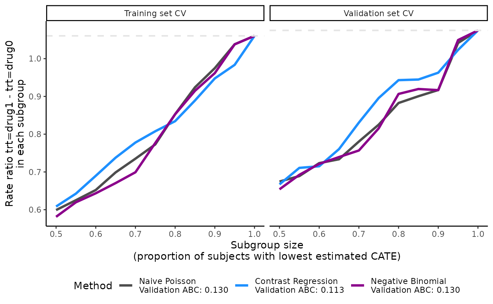
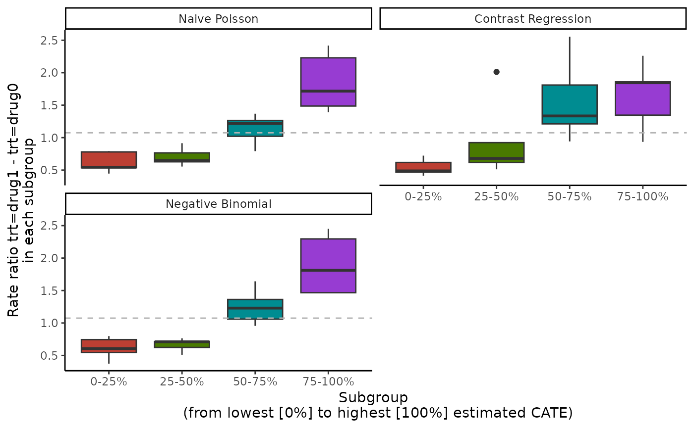
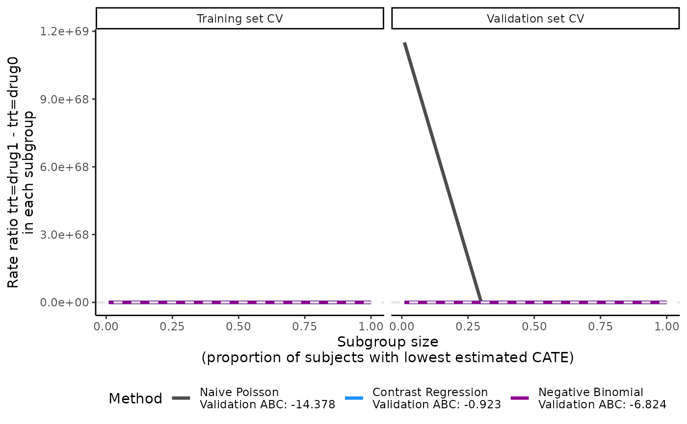
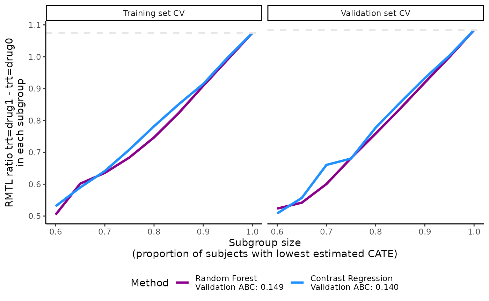
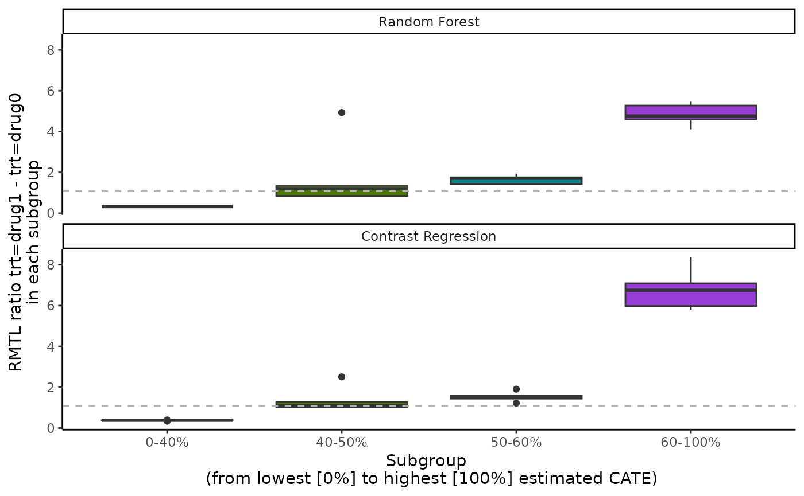
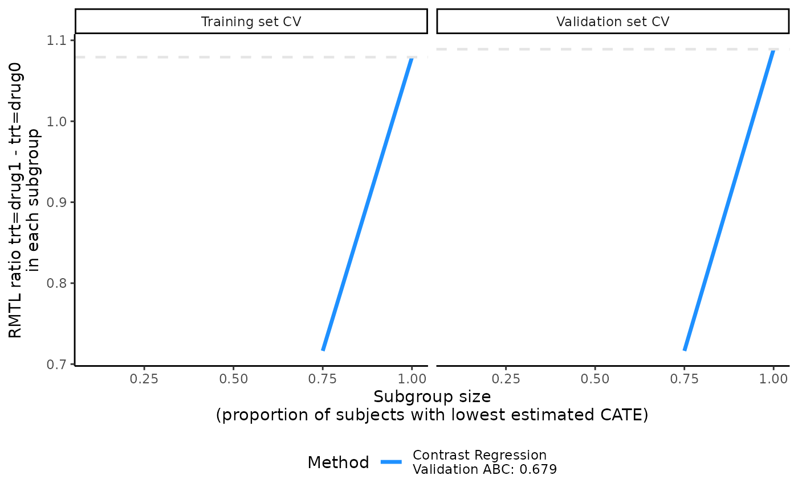
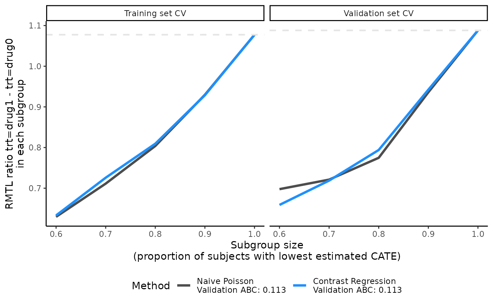

Additional examples
Vignette 3 of 4
May 11, 2023
Source:vignettes/Additional-examples.Rmd
Additional-examples.Rmd
precmed: Precision Medicine in R
A doubly robust precision medicine approach to estimate and validate conditional average treatment effects
Additional examples for the precmed package
precmed can be flexible given the many arguments that the user can specify. The example described above is one of the many ways to perform the analysis with most argument values kept as default. We provide a few more examples below to show what other options the user has and how to be more creative in using precmed.
Additional examples with count outcomes
Initial predictor method
If you choose two regressions or contrast regression as the scoring method, there is an option to specify how the initial outcome regression estimates (\(\hat\mu_r^k\) where \(r = 0,1\) is the treatment and \(k\) is the CV fold) are calculated. See Theoretical details section for the background of these initial predictors and how they are used in two and contrast regressions. Here is a list of all 3 options:
- “poisson” (Poisson regression from the
glm()function)- generalized linear model, strong assumption on Poisson distribution, fast
- “gbm” (gradient boosting machine from the
gbmR package)- ensemble method, typically tree-based, slow
- “gam” (generalized additive model from the
mgcvpackage)- a combination of generalized linear model and additive models where the linear predictor is an additive function of the covariates, can be slow
The main example above used a Poisson regression but you can try the
other 2 non-linear and more flexible options. Below, we use
catecvcount() as the example code but this can be applied
to catefitcount() as well.
# An example of using GBM as the initial predictor method
catecv(response = "count",
data = countExample,
score.method = c("poisson", "boosting", "twoReg", "contrastReg", "negBin"),
cate.model = y ~ age + female + previous_treatment + previous_cost + previous_number_relapses + offset(log(years)),
ps.model = trt ~ age + previous_treatment,
higher.y = FALSE,
initial.predictor.method = "boosting", # NEW
cv.n = 5,
seed = 999,
plot.gbmperf = FALSE,
verbose = 0)
# An example of using GAM as the initial predictor method
catecv(response = "count",
data = countExample,
score.method = c("poisson", "boosting", "twoReg", "contrastReg", "negBin"),
cate.model = y ~ age + female + previous_treatment + previous_cost + previous_number_relapses + offset(log(years)),
ps.model = trt ~ age + previous_treatment,
higher.y = FALSE,
initial.predictor.method = "gam", # NEW
xvar.smooth = c("age", "previous_cost"), # NEW
cv.n = 5,
seed = 999,
plot.gbmperf = FALSE,
verbose = 0)Note that for the GAM method, there is an additional argument called
xvar.smooth. If left as default (which is NULL), GAM will
include all independent variables in cate.model as smooth
terms with function s() in the linear predictor. You can
choose to specify only a subset of the dependent variables as the smooth
terms. In the example above, the specifications cate.model
and xvar.smooth lead to the following GAM formula:
y ~ female + previous_treatment + previous_number_relapses + s(age) + s(previous_cost),
where only age and previous medical costs are wrapped in the smooth
function and the remaining 3 independent variables are not.
Generally speaking, the “poisson” initial predictor method is the fastest and “gbm” is the slowest among the 3 methods, while “gam” is somewhere in between with longer computational time as the number of smooth terms increases.
Subgroup proportion
The ATE by subgroups and validation curve results depend on how the
subgroups are defined, which is determined by the sorted CATE scores.
There could be nested binary subgroups (cutoffs specified by
prop.cutoff) or mutually exclusive subgroups (cutoffs
specified by prop.multi). In the main example above, we
used the default values of prop.cutoff and
prop.multi and we have provided explanations in the ATE
results. Here is a recap:
prop.cutoff = seq(0.5, 1, length = 6)means that we have 6 sets of nested binary subgroups where the first subgroup splits the sample by 50/50 according to the estimated CATE scores (sorted), the 2nd subgroup splits the sample by 60/40, …, the 5th subgroup splits the sample by 90/10, and the 6th subgroup splits the sample by 100/0. The validation curves show the ATE in the first group of each split, i.e., 50%, 60%, 70%, …, 100%. The 6th subgroup is technically not a split but we keep it because it is equivalent to the overall ATE (the gray dashed reference line). The functions that useprop.cutoffwill automatically discard 0 if supplied because 0/100 split does not make sense as there is no 0% subgroup to plot for the validation curves, and a warning message will be given. The argumenthigher.ycontrols the direction of the sorted CATE scores, i.e., whether we split from the lowest or the highest CATE scores. For our toy example,higher.y= FALSE so we split from the lowest CATE scores such that the first group in each subgroup represents higher responders to the treatment coded with 1.prop.multi = c(0, 1/3, 2/3, 1)means that we specify a 3-category mutually exclusive subgroup, split by 33/33/33 according to the estimated CATE scores. The argumenthigher.ycontrols the direction of the sorted CATE scores, i.e., where we split from the lowest or the highest CATE scores. For our toy example,higher.y= FALSE so we split from the lowest CATE scores. Contrary toprop.cutoff,prop.multimust include both 0 and 1 to remind us of the mutual exclusiveness. he functions that useprop.multiwill automatically attach 0 and/or 1 if they are not supplied and a warning message will be given. Now we show more examples of different cutoffs and how they are reflected in the results.
# An example of 11 nested binary subgroups and a 4-category mutually exclusive subgroup
output_catecv2 <- catecv(response = "count",
data = countExample,
score.method = c("poisson", "contrastReg", "negBin"),
cate.model = y ~ age + female + previous_treatment + previous_cost + previous_number_relapses + offset(log(years)),
ps.model = trt ~ age + previous_treatment,
higher.y = FALSE,
prop.cutoff = seq(0.5, 1, length = 11), # NEW
prop.multi = c(0, 1/4, 2/4, 3/4, 1), # NEW
initial.predictor.method = "poisson",
cv.n = 5,
seed = 999,
plot.gbmperf = FALSE,
verbose = 0)
#> Warning in prop.multi == c(0, 1): longer object length is not a multiple of
#> shorter object length
#> Warning in data.preproc(fun = "crossv", cate.model = cate.model, ps.model = ps.model, : Variable trt was recoded to 0/1 with drug0->0 and drug1->1.
print(output_catecv2$ate.contrastReg$ate.est.train.high.cv)
#> cv1 cv2 cv3 cv4 cv5
#> prop0.5 0.5915071 0.6428854 0.5744973 0.6406698 0.5924975
#> prop0.55 0.6139446 0.6935608 0.6003164 0.6519496 0.6531537
#> prop0.6 0.6722855 0.7114461 0.6591966 0.6871502 0.7186517
#> prop0.65 0.6958967 0.7839030 0.7306405 0.7265152 0.7519433
#> prop0.7 0.7371734 0.8399117 0.7806273 0.7779180 0.7539283
#> prop0.75 0.7795305 0.8320732 0.8003894 0.8266780 0.7999920
#> prop0.8 0.8034239 0.9082507 0.8218952 0.8269917 0.8117300
#> prop0.85 0.8585330 0.9649914 0.8763313 0.8949641 0.8512447
#> prop0.9 0.9027108 1.0257463 0.9595834 0.9049020 0.9452626
#> prop0.95 0.9607169 1.0002418 0.9968210 0.9784077 0.9816699
#> prop1 1.0599740 1.0520675 1.0577453 1.0641114 1.0677619
# Dimension is now 11 rows (nested binary subgroups) by 5 columns (CV iterations)Because we have new prop.cutoff with 11 values as
opposed to only 6 in the original example, the number of rows in the ATE
results will be changed accordingly while the number of columns stays
the same because we still use 5 CV iterations.
plot(output_catecv2) 
The validation curves depend on prop.cutoff and are now
smoother than the one presented in the main example because they contain
10 subgroups instead of 5. The ABC statistic is not affected by the
change in prop.cutoff because the calculation of ABC
statistics depends on the minimum and maximum of the
prop.cutoff vector and is always calculated based on 100
evenly-spaced cutoffs created from this range. See more theoretical
details on ABC calculation in the Theoretical details section.
print(output_catecv2$ate.contrastReg$ate.est.train.group.cv)
#> cv1 cv2 cv3 cv4 cv5
#> prop0.25 1.8605588 1.7135347 1.8864599 1.6231411 1.8095445
#> prop0.5 1.2881059 1.3353842 1.3960644 1.4225390 1.3873281
#> prop0.75 0.8863431 1.0140060 0.8214955 1.0732422 0.8013989
#> prop1 0.4352059 0.3988016 0.4113767 0.4230607 0.4559544
# Dimension is now 4 rows (multi-category mutually exclusive subgroups) by 5 columns (CV iterations)
boxplot(output_catecv2)
For results on the mutually exclusive subgroups, the number of rows
in the ATE results increases from 3 to 4 in comparison with the original
example because prop.multi now defines 4 mutually exclusive
subgroups. For each method, the box plot now has 4 boxes for 4 mutually
exclusive subgroups.
Examples that we do not recommend
In this next example, prop.cutoff includes 0.01, which
is very close to 0. Consequently, the scoring methods may run into some
convergence issues because the first subgroup includes a small number of
patients. This can lead to highly unstable ATE estimates, as shown in
the first CV iteration of contrast regression in
output_catecv3$ate.contrastReg$ate.est.valid.high.cv.
Moreover, the validation curves become useless due to the extreme ATE
estimates.
# An example of very few nested binary subgroups
output_catecv3 <- catecv(response = "count",
data = countExample,
score.method = c("poisson", "contrastReg", "negBin"),
cate.model = y ~ age + female + previous_treatment
+ previous_cost + previous_number_relapses
+ offset(log(years)),
ps.model = trt ~ age + previous_treatment,
initial.predictor.method = "poisson",
higher.y = FALSE,
prop.cutoff = c(0, 0.01, 0.30, 0.75, 1), # NEW
cv.n = 5,
seed = 999,
plot.gbmperf = FALSE,
verbose = 1)
#> Warning in data.preproc(fun = "crossv", cate.model = cate.model, ps.model = ps.model, : Variable trt was recoded to 0/1 with drug0->0 and drug1->1.
#> Warning in data.preproc(fun = "crossv", cate.model = cate.model, ps.model =
#> ps.model, : The first element of prop.cutoff cannot be 0 and has been removed.
#>
|
| | 0%
#> cv = 1
#> splitting the data..
#> training..
#> validating..
#> convergence TRUE
#> Thu May 11 10:21:52 2023
#>
|
|============== | 20%
#> cv = 2
#> splitting the data..
#> training..
#> validating..
#> convergence TRUE
#> Thu May 11 10:21:57 2023
#>
|
|============================ | 40%
#> cv = 3
#> splitting the data..
#> training..
#> validating..
#> convergence TRUE
#> Thu May 11 10:22:05 2023
#>
|
|========================================== | 60%
#> cv = 4
#> splitting the data..
#> training..
#> validating..
#> convergence TRUE
#> Thu May 11 10:22:14 2023
#>
|
|======================================================== | 80%
#> cv = 5
#> splitting the data..
#> training..
#> validating..
#> convergence TRUE
#> Thu May 11 10:22:23 2023
#>
|
|======================================================================| 100%
#> Total runtime : 42.9 secs
output_catecv3$ate.contrastReg$ate.est.valid.high.cv
#> cv1 cv2 cv3 cv4 cv5
#> prop0.01 0.5746485 NA 6.858623e+04 1.901224e+06 NA
#> prop0.3 0.6944399 0.6252387 6.104046e-01 5.625166e-01 0.5828618
#> prop0.75 1.1424118 0.8042944 8.929894e-01 7.984435e-01 0.8409132
#> prop1 1.0812603 1.0978549 1.053193e+00 1.072635e+00 1.0689638
plot(output_catecv3) 
Below are some general recommendations on the choice of
prop.cutoff and prop.multi:
- We do not recommend including 0 in
prop.cutoffas it is an invalid value. The functions will automatically remove 0 inprop.cutoffand output a warning message. - We do not recommend choosing values too close to 0 either because this will generate very small subgroups which may lead to numerical instability, e.g., 1/99 split specified by 0.01 in this example and corresponding ATE in the training data for contrast regression. In this situation, either the validation curves will be dominated by the unstable ATE estimates, making the plot useless as in this example, or the validation curves will not be plotted if the numerical instability due to an extreme split leads to missing values, in which case a warning is printed as in the example above.
- In general, we do not recommend specifying too few proportions for
prop.cutoff(e.g., 2 or 3) because the validation curves will look jagged. The validation curves will be smoother with more proportions spread out over the range of proportions. If computation is an issue, however, choosing too many values forprop.cutofforprop.multican be time consuming. It is recommended to start from a smaller length and you can increase the length as needed.
Additional examples for survival outcomes
Initial predictor method
If you choose two and/or contrast regression as the scoring method, there is an option to specify how the initial outcome regression estimates (\(\hat\mu_r^k\) where \(r = 0,1\) is the treatment and \(k\) is the cross validation fold) are calculated. See Theoretical details section for the background of these initial predictors and how they are used in the two and contrast regression. Here is a list of all 3 options:
- “logistic” (logistic regression from the
glm()function)- generalized linear model, strong assumption on binomial distribution, fast
- “boosting” (gradient boosting machine from the
gbmR package)- ensemble method, typically tree-based, assume the time-to-event outcome as Gaussian distributed, slow
- “randomForest” (random survival forest model from the
randomForestSRCpackage)- ensemble method, tree-based, non-parametric, can be slow
The main example above used a logistic regression but you can try the
other 2 non-linear and more flexible options. Below, we use
catecv() as the example code but this can be applied to
catefit() as well.
# An example of using GBM as the initial predictor method
tau0 <- with(survivalExample,
min(quantile(y[trt == "drug1"], 0.95), quantile(y[trt == "drug0"], 0.95)))
catecv(response = "survival",
data = survivalExample,
score.method = c("poisson", "boosting", "randomForest", "twoReg", "contrastReg"),
cate.model = survival::Surv(y, d) ~ age + female + previous_cost + previous_number_relapses,
ps.model = trt ~ age + previous_treatment,
ipcw.model = NULL,
followup.time = NULL,
tau0 = tau0,
surv.min = 0.025,
higher.y = TRUE,
prop.cutoff = seq(0.6, 1, length = 5),
prop.multi = c(0, 0.5, 0.6, 1),
cv.n = 5,
initial.predictor.method = "boosting", # NEW
tree.depth = 3, # NEW
seed = 999,
plot.gbmperf = FALSE,
verbose = 0)
# An example of using random forest as the initial predictor method
catecv(response = "survival",
data = survivalExample,
score.method = c("poisson", "boosting", "randomForest", "twoReg", "contrastReg"),
cate.model = survival::Surv(y, d) ~ age + female + previous_cost + previous_number_relapses,
ps.model = trt ~ age + previous_treatment,
ipcw.model = NULL,
followup.time = NULL,
tau0 = tau0,
surv.min = 0.025,
higher.y = TRUE,
prop.cutoff = seq(0.6, 1, length = 5),
prop.multi = c(0, 0.5, 0.6, 1),
cv.n = 5,
initial.predictor.method = "randomForest", # NEW
n.trees.rf = 500, # NEW
seed = 999,
plot.gbmperf = FALSE,
verbose = 0)Note that for boosting and randomForest
methods that are tree-based, parameters such as tree depth and number of
trees can be specified with arguments tree.depth,
n.trees.rf, and n.trees.boosting.
Generally speaking, the “logistic” initial predictor method is the fastest and “boosting” is the slowest among the 3 methods, while “randomForest” is somewhere in between with longer computational time as the number of trees and tree depth increase.
Subgroup proportion
The precmed results depend on the subgroups which
are determined by the sorted CATE scores. There could be nested binary
subgroups (cutoffs specified by prop.cutoff) or mutually
exclusive subgroups (cutoffs specified by prop.multi). In
the main example above, we used certain values of
prop.cutoff and prop.multi and we have
provided explanations in the ATE results. Here is a recap:
prop.cutoff = seq(0.6, 1, length = 5)means that we have 5 sets of nested binary subgroups where the first subgroup set is split by 60/40 according to the estimated CATE scores (sorted), the 2nd subgroup set is split by 70/30, …, and the 6th subgroup set is split by 100/0. The validation curves show results of the first group of each split, i.e., 60%, 70%, …, 100%. The 5th subgroup set is technically not a split but we keep it because it is equivalent to the overall ATE (the gray dashed reference line). precmed will automatically discard 0 if supplied because 0/100 split does not make sense as there is no 0% subgroup to plot for the validation curves, and a warning message will be given. Argumenthigher.ycontrols the direction of the sorted CATE scores, i.e., whether we split from the lowest or the highest CATE scores. For our toy example,higher.y= TRUE so we split from the lowest CATE scores.prop.multi = c(0, 0.5, 0.6, 1)means that we specify a 3-category mutually exclusive subgroup, split by 50/10/40 according to the estimated CATE scores. Argumenthigher.ycontrols the direction of the sorted CATE scores, i.e., where we split from the lowest or the highest CATE scores. For our toy example,higher.y= TRUE so we split from the lowest CATE scores. Contrary toprop.cutoff,prop.multimust include both 0 and 1 to remind us of the mutual exclusiveness. precmed will automatically attach 0 and/or 1 if they are not supplied and a warning message will be given.
Now we show more examples of different cutoffs and how they are reflected in the results.
# An example of 9 nested binary subgroups and a 4-category mutually exclusive subgroup
tau0 <- with(survivalExample,
min(quantile(y[trt == "drug1"], 0.95), quantile(y[trt == "drug0"], 0.95)))
output_catecv2 <- catecv(response = "survival",
data = survivalExample,
score.method = c("randomForest", "contrastReg"),
cate.model = survival::Surv(y, d) ~ age + female
+ previous_cost + previous_number_relapses,
ps.model = trt ~ age + previous_treatment,
initial.predictor.method = "logistic",
ipcw.model = NULL,
followup.time = NULL,
tau0 = tau0,
surv.min = 0.025,
higher.y = TRUE,
prop.cutoff = seq(0.6, 1, length = 9), # NEW
prop.multi = c(0, 0.4, 0.5, 0.6, 1), # NEW
cv.n = 5,
seed = 999,
plot.gbmperf = FALSE,
verbose = 0)
#> Warning in prop.multi == c(0, 1): longer object length is not a multiple of
#> shorter object length
#> Warning in data.preproc.surv(fun = "crossv", cate.model = cate.model, ps.model = ps.model, : Variable trt was recoded to 0/1 with drug0->0 and drug1->1.
print(output_catecv2$ate.contrastReg$ate.est.train.high.cv)
#> cv1 cv2 cv3 cv4 cv5
#> prop0.6 0.5286488 0.5344877 0.5325352 0.5246205 0.5338395
#> prop0.65 0.5791944 0.5829187 0.6151744 0.5762170 0.5955160
#> prop0.7 0.6168472 0.6682790 0.6440506 0.6333903 0.6438643
#> prop0.75 0.7017728 0.7330868 0.7038570 0.6943269 0.7105475
#> prop0.8 0.7696228 0.8005505 0.7752939 0.7763984 0.7873444
#> prop0.85 0.8374886 0.8700290 0.8403268 0.8512221 0.8544261
#> prop0.9 0.9110024 0.9351850 0.9030097 0.9108305 0.9137251
#> prop0.95 0.9951218 1.0190440 0.9862585 0.9967722 0.9920313
#> prop1 1.0534514 1.1042633 1.0646558 1.0830122 1.0690691
# Dimension is 9 (nested binary subgroups) by 5 (CV iterations)Because we have new prop.cutoff with 9 values as opposed
to only 5 in the original example, the number of rows in the ATE results
will be changed accordingly while the number of columns remains to be
5.
plot(output_catecv2) 
The validation curves depend on prop.cutoff and have
more line segments than the one presented in the main example because
they contain 9 sets of subgroups instead of 5 sets (although it is not
so obvious here in this example). The ABC statistic is not affected by
this because the calculation of ABC statistics depends on the minimum
and maximum of the prop.cutoff vector and 100 evenly-spaced
subgroup cutoffs are created from this range. The highest proportion
cutoff that is not 1 in the main example was 0.9 and it is now 0.95. See
more theoretical details on ABC calculation in the Theoretical details section.
print(output_catecv2$ate.contrastReg$ate.est.train.group.cv)
#> cv1 cv2 cv3 cv4 cv5
#> prop0.4 6.2068924 6.6101517 6.7424201 6.5030289 7.027033
#> prop0.5 1.4458427 1.4142659 1.4728371 1.4372399 1.381593
#> prop0.6 0.9080483 1.2062367 1.0115264 0.9270653 1.259874
#> prop1 0.3746892 0.4068091 0.3454113 0.3465889 0.377679
# Dimension is now 4 (multi-category mutually exclusive subgroups) by 3 (CV iterations)
boxplot(output_catecv2)
#> Warning: Removed 4 rows containing non-finite values (`stat_boxplot()`).
For results on the mutually exclusive subgroups, the number of rows
in the ATE results increases from 3 to 4 in comparison with the original
example because prop.multi now defines 4 mutually exclusive
subgroups. For each methods, the box plot now has 4 boxes for 4 mutually
exclusive subgroups.
Examples that we do not recommend
In this example, prop.cutoff includes 0.01, which is
very close to 0. Consequently, the scoring methods may run into some
convergence issues because the first subgroup includes a small number of
patients. This can lead to highly unstable ATE estimates, as shown in
the first CV iteration of contrast regression in
output_catecv3$ate.contrastReg$ate.est.valid.high.cv.
Moreover, the validation curves become useless due to the extreme ATE
estimates.
# An example of very few nested binary subgroups
output_catecv3 <- catecv(response = "survival",
data = survivalExample,
score.method = c("contrastReg"),
cate.model = survival::Surv(y, d) ~ age + female + previous_cost + previous_number_relapses,
ps.model = trt ~ age + previous_treatment,
initial.predictor.method = "logistic",
ipcw.model = NULL,
followup.time = NULL,
tau0 = tau0,
surv.min = 0.025,
higher.y = TRUE,
prop.cutoff = c(0, 0.1, 0.75, 1), # NEW
prop.multi = c(0, 0.5, 0.6, 1),
cv.n = 5,
seed = 999,
plot.gbmperf = FALSE,
verbose = 1)
#> Warning in data.preproc.surv(fun = "crossv", cate.model = cate.model, ps.model = ps.model, : Variable trt was recoded to 0/1 with drug0->0 and drug1->1.
#> Warning in data.preproc.surv(fun = "crossv", cate.model = cate.model, ps.model
#> = ps.model, : The first element of prop.cutoff cannot be 0 and has been
#> removed.
#>
|
| | 0%
#> cv = 1
#> splitting the data..
#> training..
#> validating..
#> Contrast regression converged.
#> Thu May 11 10:24:52 2023
#>
|
|============== | 20%
#> cv = 2
#> splitting the data..
#> training..
#> validating..
#> Contrast regression converged.
#> Thu May 11 10:24:59 2023
#>
|
|============================ | 40%
#> cv = 3
#> splitting the data..
#> training..
#> validating..
#> Contrast regression converged.
#> Thu May 11 10:25:05 2023
#>
|
|========================================== | 60%
#> cv = 4
#> splitting the data..
#> training..
#> validating..
#> Contrast regression converged.
#> Thu May 11 10:25:11 2023
#>
|
|======================================================== | 80%
#> cv = 5
#> splitting the data..
#> training..
#> validating..
#> Contrast regression converged.
#> Thu May 11 10:25:18 2023
#>
|
|======================================================================| 100%
#> Total runtime : 31.83 secs
output_catecv3$ate.contrastReg$ate.est.valid.high.cv
#> cv1 cv2 cv3 cv4 cv5
#> prop0.1 NA NA NA NA NA
#> prop0.75 0.7251659 0.5735622 0.9376515 0.6359857 0.7093587
#> prop1 1.1465914 1.0179736 1.1351233 1.0311785 1.1141329
plot(output_catecv3) 
Below are some general recommendations on the choice of
prop.cutoff and prop.multi:
- We do not recommend including 0 in
prop.cutoffas it is an invalid value. precmed automatically removes 0 inprop.cutoffand outputs a warning message. - We do not recommend choosing values too close to 0 either because this will generate very small subgroups which may lead to numerical instability, e.g., 10/90 split specified by 0.1 in this example. In this situation, either the validation curves will be plotted by the range of the unstable ATE estimates will make them useless or the validation curves will not be plotted if the numerical instability due to an extreme split leads to missing or infinite values, in which case a warning or error is printed as in the example above.
- In general, we do not recommend specifying too few proportions for
prop.cutoff(e.g., 2 or 3) because the validation curves will look very jagged. The validation curves will be smoother with more proportions and more spread out over the range of proportions. If computation is an issue, however, choosing too many values forprop.cutofforprop.multican be time consuming. It is recommended to start from a smaller length and you can increase the length as needed.
IPCW model and method
The default IPCW model uses the same covariates as the outcome model
cate.model plus the treatment. The default IPCW method is a
Cox regression with Breslow estimator of the baseline survivor function
from coxph() function in the survival package.
Different variables or different method can be specified in the IPCW
model. In the example below, we changed the covariates to the number of
symptoms and number relapses in the pre-index period and specified the
Weibull accelerated failure time (AFT) regression model using the
location-scale parameterization. The survreg() function in
the survival package was used to fit the AFT model.
# An example of a different IPCW model with different covariates from default
output_catecv4 <- catecv(response = "survival",
data = survivalExample,
score.method = c("poisson", "contrastReg"),
cate.model = survival::Surv(y, d) ~ age + female + previous_cost + previous_number_relapses,
ps.model = trt ~ age + previous_treatment,
initial.predictor.method = "logistic",
ipcw.model = ~ previous_number_symptoms + previous_number_relapses, # NEW
ipcw.method = "aft (weibull)", # NEW
followup.time = NULL,
tau0 = tau0,
surv.min = 0.025,
higher.y = TRUE,
prop.cutoff = seq(0.6, 1, length = 5),
prop.multi = c(0, 0.5, 0.6, 1),
cv.n = 5,
seed = 999,
plot.gbmperf = FALSE,
verbose = 0)Truncation and follow-up time
The argument tau0 specifies the truncation time for
RMTL. The default is the maximum survival time in the data but it can be
changed if you have a specific truncation time in mind. Similarly, the
maximum follow-up time argument followup.time can be
changed from the default, which is unknown potential censoring time. The
study setup usually can shed some light on what values to use for these
two time parameters.
In the main example, we used the minimum of the 95th percentile of
survival time in either treatment group as tau0. Below we
show how setting different values of the truncation time.
# An example of a different IPCW model with different covariates from default
output_catecv5 <- catecv(response = "survival",
data = survivalExample,
score.method = c("poisson", "contrastReg"),
cate.model = survival::Surv(y, d) ~ age + female + previous_cost + previous_number_relapses,
ps.model = trt ~ age + previous_treatment,
initial.predictor.method = "logistic",
ipcw.model = ~ previous_number_symptoms + previous_number_relapses,
ipcw.method = "aft (weibull)",
followup.time = NULL,
tau0 = NULL, # NEW
higher.y = TRUE,
cv.n = 5,
surv.min = 0.025,
prop.cutoff = seq(0.6, 1, length = 5),
prop.multi = c(0, 0.5, 0.6, 1),
seed = 999,
plot.gbmperf = FALSE,
verbose = 0)
#> Warning in data.preproc.surv(fun = "crossv", cate.model = cate.model, ps.model
#> = ps.model, : No value supplied for tau0. Default sets tau0 to the maximum
#> survival time.
#> Warning in data.preproc.surv(fun = "crossv", cate.model = cate.model, ps.model = ps.model, : Variable trt was recoded to 0/1 with drug0->0 and drug1->1.
plot(output_catecv5)
Other precmed vignettes in this serie
1. Examples for count outcome
2. Examples for survival
outcome
3. Additional examples
4. Theoretical details